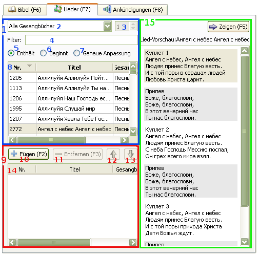

2.3 Lieder anzeigen
Für Lieder anzeigen:
Man kann alle Gesangbücher gleichzeitig
geöffnet halten und Lieder über den Filter wählen. Aber, um eine Nummer des Liedes in dem Fenster rechts (3),
einzugeben, muss ein bestimmtes Gesangbuch gewählt werden.
Für die Wahl eines Liedes kann man
das Verzeichnis benutzen (8). Wenn ein bestimmtes Gesangbuch gewählt worden ist,
so kann man eine Nummer des Liedes entweder in das Fenster mit den Nummern (rechts) oder
in das Fenster des Filters eingeben..
Nachdem ein Lied
gewählt wurde, wird es in das Vorschau-Fenster eingetragen. Beim Drücken des "Anzeigen"-Knopfes,
wird der erste Vers/die erste Strophe des Liedes automatisch zum Anzeigen gesendet.
Falls es notwendig ist, eine(n) andere(n) Vers/Strophe zum Anzeigen bringen, müssen Sie
auf diese(n) Vers/Strophe im Vorschu-Fenster doppelklicken.

1. Vorschau-Block der Lieder:
Wählen Sie ein bestimmtes Gesangbuch. Wenn die Option "Alle Gesangbücher" gewählt worden ist, werden in dem Verzeichnis (8) alle Lieder, die in der Datenbank vorhanden sind, angezeigt. Wenn ein bestimmtes Gesangbuch gewählt worden ist, werden in diesem Verzeichnis nur Lieder aus diesem Gesangbuch angezeigt.
Dieses Fenster wird nur dann aktiviert, wenn ein bestimmtes Gesangbuch gewählt worden ist, und bleibt grau, wenn die Option "Alle Gesangbücher" gewählt worden ist. Beim Einfügen einer Nummer in dieses Fenster, wird das volle Lieder-Verzeichnis des Gesangbuches, in dem das Lied mit der eingefügten Nummer markiert ist, angezeigt.
Hiehin wird ein(e) Wort/Phrase des gesuchten Liedes eingefügt. In dem Verzeichnis werden nur Lieder angezeigt, die dem eingefügem Text entsprechen.
Werden alle Lieder angezeigt, wo der eingegebene Text vorkommt. Die Suche wird nur nach Nummern und den Namen der Lieder durchgefüht, nicht nach dem ganzen Text.
Werden alle Lieder angezeigt, die mit dem eingegebenem Text anfangen.
Werden nur Lieder angezeigt, die mit dem eingegebenem Text genau übereinstimmen. Diese Option ist sehr hilfreich für die Suche einer bestimmten Nummer des Liedes. Dies kann man statt Nummer-Fenster (3) benutzen.
Kann entweder einen vollen Verzeichnis der Lieder oder ein Such-Ergebnis enthalten. Beim Drücken auf den Namen eines Liedes in diesem Verzeichnis, wird dieses in die Vorschau-Liste gesendet. Beim Doppelklick wird dieses Lied in die "Abspiel"-Liste (Playlist) eingefügt.
9. "Abspiel"-Verzeichnis:
Hier werden die Lieder in das "Abspiel"-Verzeichnis hinzugefügt und werden hier gespeichert.
Beim Drücken auf diesen Knopf, wird das gewählte Lied in die "Abspiel"-Liste hinzugefügt. Dieser Knopf ist nur dann aktiviert, wenn das Lied in dem Lieder-Verzeichnis gewählt wurde und diese List sich in dem Fokus befindet; sie wird in grau makriert, wenn die "Abspiel"-Liste in dem Fokus sich befindet.
Löscht das gewählte Lied aus der "Abspiel"-Liste.
Versetzt das Lied in der "Abspiel"-Liste nach oben.
Versetzt das Lied in der "Abspiel"-Liste nach unten.
Enthält Lieder, die zum Anzeigen auf dem Bildschirm bestimmt wurden. Beim Drücken auf den Namen des Liedes in dieser Liste, wird dieses in das Vorschau-Fenster gesendet. Doppelklick bringt das Lied zum Anzeigen auf dem Bildschirm.
15. Vorschau-Block:
In diesem Teil kann man ein Lied durchschauen und -lesen, bevor es auf dem Bildschirm angezeigt wird.
Hierhin werden Lieder gesendet und automatisch ersetzt, die aus dem Lieder-Verzeichnis oder der "Abspiel"-Liste gewählt wurden.
Beim Drücken auf den "Anzeigen"-Knopf wird der gewählte Vers auf den Bildschirm gesendet.
Das Gleiche macht auch der Doppelklick auf den gewählten Vers.